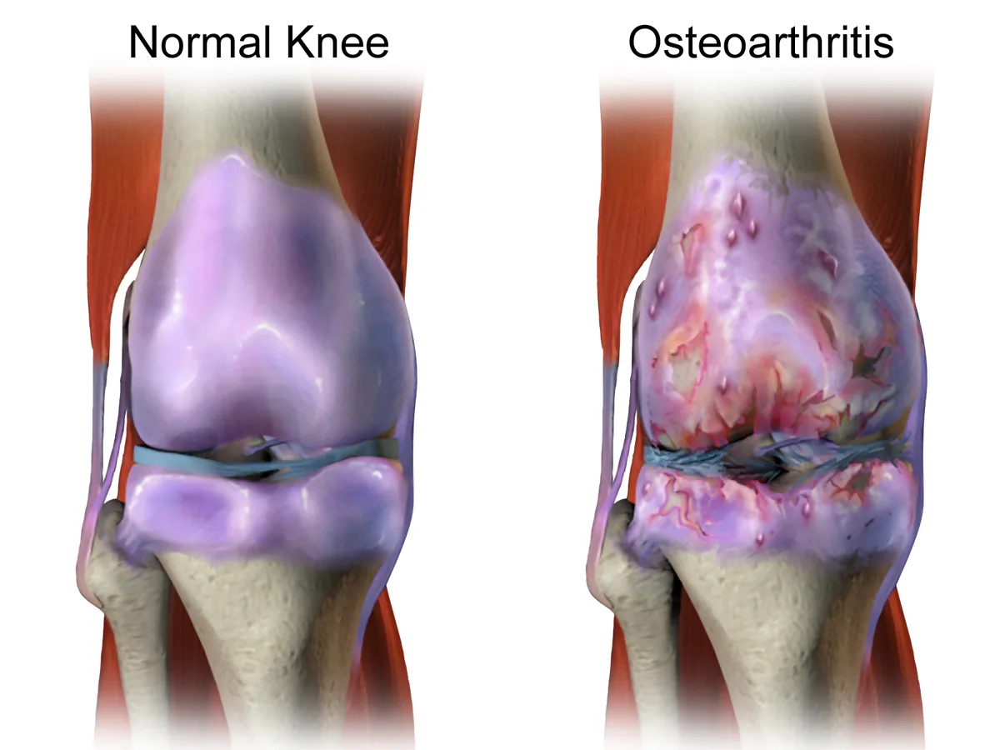
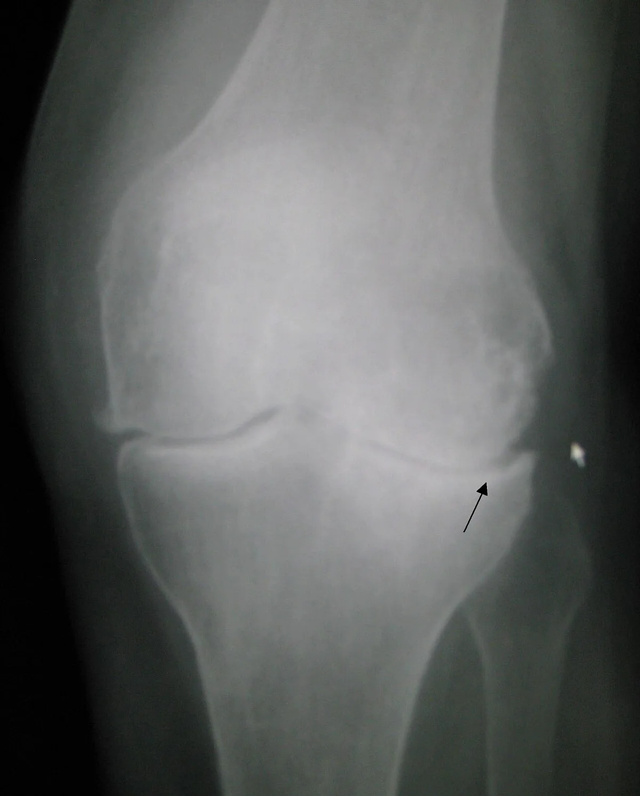
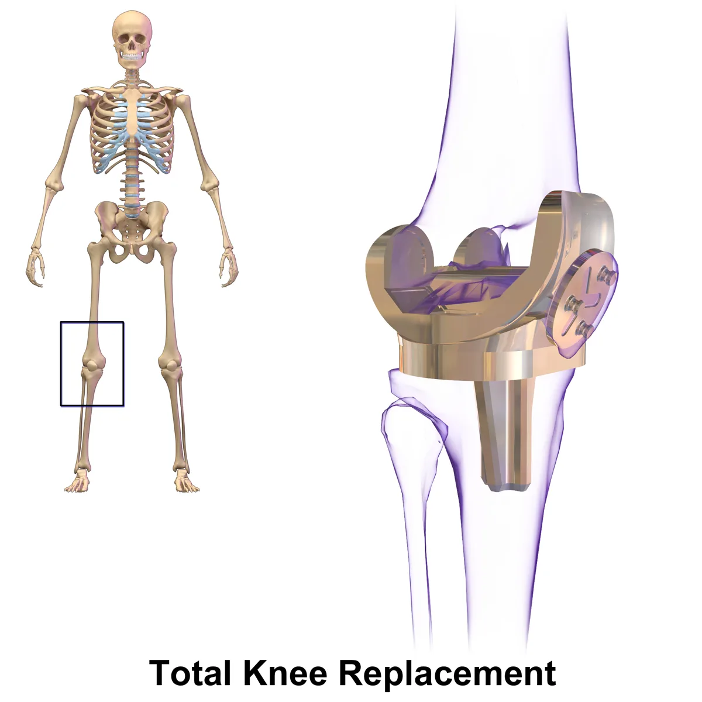
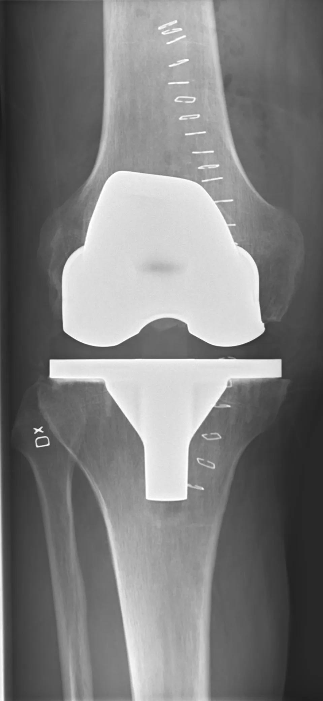

Видео: Замена коленного сустава — после операции и дома
Как готовиться к плановой операции, смотрите в видео «Подготовка к плановой операции».
Замена коленного сустава (TKR): что это, как подготовиться и что важно знать до операции.
Что это за операция
Изношенные суставные поверхности бедренной и большеберцовой костей в колене заменяют металлическими частями, а между ними ставят пластиковый вкладыш. Иногда заменяют и поверхность надколенника.
- Чаще всего операцию делают при тяжёлом артрозе, когда боль и ограничение движений не проходят от лечения без операции.
- Вставать и ходить с ходунками обычно начинают рано, под контролем физиотерапевта. Когда именно — решает команда отделения.




Подготовка
- Душ: вечером накануне операции вымойте тело и волосы. Утром повторите душ, если это указано отделением. Используйте мыло или антисептическое средство согласно инструкции отделения. Если есть аллергия на мыло или антисептики — сообщите персоналу.
- Не брейте ногу в области операции сами.
- Сообщите заранее, если у вас появились температура, новый кашель, жжение при мочеиспускании, инфекция зуба или дёсен либо любая рана, ссадина или кожная инфекция на ноге, которую будут оперировать.
- Возьмите удобную закрытую обувь с задником.
Лекарства перед операцией
Это общие правила. Точные указания даст ваш врач — следуйте им.
- Принесите список всех лекарств, которые принимаете.
- Препараты, разжижающие кровь (антикоагулянты и антиагреганты): останавливать — только по указанию врача. Аспирин не отменяйте сами.
- Если вы принимаете такие препараты, как Jardiance (эмпаглифлозин), Forxiga (дапаглифлозин) или комбинированные таблетки, например Jardiance Duo или Xigduo, сообщите врачу до операции, даже если у вас нет диабета. Эти препараты относятся к группе ингибиторов SGLT2. Эти лекарства применяют также при сердечной недостаточности и болезнях почек. Перед плановой операцией эмпаглифлозин и дапаглифлозин обычно отменяют как минимум за 3 дня, а эртуглифлозин — как минимум за 4 дня. Это нужно для снижения риска кетоацидоза, который возможен даже без выраженного повышения сахара крови. Точный план отмены и возобновления лечения определяет врач. Не меняйте лечение самостоятельно.
- Инсулин и другие препараты от диабета: заранее получите указания врача, какие лекарства принимать и в каких дозах. При диабете первого типа базальный инсулин обычно продолжают с коррекцией дозы по назначению врача. Самостоятельно прекращать его введение нельзя.
- Если вы делаете уколы Оземпик или Мунджаро — обязательно скажите врачу и анестезиологу.
- Голодание: обычно лёгкую еду необходимо закончить не менее чем за 6 часов до начала анестезии, жирную или тяжёлую — не менее чем за 8 часов. Прозрачные жидкости, например воду, обычно можно пить до 2 часов до анестезии. При некоторых заболеваниях, включая диабет и замедленное опорожнение желудка, правила могут отличаться. Следуйте точным указаниям отделения.
Дренаж после операции
Дренаж — тонкая трубка из раны, по которой кровь и жидкость оттекают в закрытый пакет или ёмкость.
- После первичной замены коленного сустава дренаж обычно не требуется. Американская академия хирургов-ортопедов (2022) рекомендует не использовать его рутинно, поскольку не установлено значимого улучшения результатов операции или снижения частоты осложнений. В отдельных случаях необходимость дренажа определяет хирург.
- Если дренаж установлен, в ёмкости может появляться кровянистая жидкость. Со временем её количество часто уменьшается, а цвет может становиться светлее. Резкие изменения необходимо сообщать персоналу.
- Когда удаляют: зависит от вида дренажа, количества отделяемого и решения хирурга. Удаляет медсестра или врач.
- Берегите трубку: не тяните и не перегибайте её. Закрепляйте ёмкость так, как показал персонал. Не пытайтесь самостоятельно вставлять или повторно соединять трубку.
- Сразу сообщите медсестре, если: трубка выпала или отсоединилась; ёмкость быстро наполняется ярко-красной кровью; отток внезапно прекратился, хотя до этого жидкость поступала в ёмкость; подтекает вокруг трубки; усилились боль или отёк; появились температура, слабость или головокружение.
Когда срочно обращаться за помощью
- После операции выполняйте назначенные упражнения, соблюдайте указания по нагрузке на ногу и принимайте препараты для профилактики тромбов строго по назначению врача. Повязку меняйте только по инструкции персонала.
- Свяжитесь с вашей хирургической командой в тот же день, если появились новые или усиливающиеся боль или отёк икры, распространяющееся покраснение вокруг раны, гной или нарастающие выделения, стойкая температура или озноб либо усиливающаяся боль в колене. Если не удаётся связаться с командой или симптомы выраженные, обратитесь в приёмное отделение.
- При внезапной одышке или боли в груди немедленно вызывайте скорую помощь по номеру 101 («Маген Давид Адом»).
Лестница с тростью
Первые часы после операции: как помочь и не помешать
- Особое время. Первые часы и первые сутки после операции — время, когда за человеком наблюдают особенно внимательно. Чаще всего всё идёт спокойно, но иногда помощь нужна очень быстро. Поэтому проход к пациенту и медицинскому оборудованию всегда должен оставаться свободным.
- Медсестра проверяет. После возвращения в отделение медсестра регулярно проверяет давление, пульс, частоту дыхания, насыщение крови кислородом, температуру и уровень сознания, а также осматривает область операции. В нашем отделении обычно так: сразу при поступлении из операционной, затем через час, ещё через час, затем через два часа, а дальше каждые четыре часа в течение первых суток. При необходимости проверки делают чаще. Это плановое наблюдение и не обязательно означает, что что-то не так. Если назначен эноксапарин (Клексан), после некоторых ортопедических операций в нашем отделении первый послеоперационный укол обычно делают примерно через двенадцать часов. Время определяет врач с учётом остановки кровотечения, вида операции и спинальной или эпидуральной анестезии.
- Свободный проход. Пожалуйста, оставляйте свободный проход к кровати со всех сторон. Не ставьте стулья и сумки вплотную к кровати и в проходе. К пациенту должны быстро подойти медсестра, врач и подъехать тележка с лекарствами и оборудованием.
- Меньше людей — лучше. Лучше, если одновременно рядом с пациентом будет не больше одного-двух близких, если это допускают правила отделения. Когда персонал подходит к пациенту, пожалуйста, освободите место. Если вас попросили выйти из палаты, выполните просьбу. Позже можно уточнить причину и задать вопросы.
- Только с разрешения. После наркоза бывают тошнота и рвота, а ослабленный человек может поперхнуться. После операции не давайте пациенту еду и питьё без разрешения медсестры. Когда пациент достаточно проснулся, может безопасно глотать и нет других ограничений, ему могут разрешить пить и есть. Иногда начинают с небольшого количества воды, затем переходят к еде. Когда и что можно, решает медицинская команда.
- Борта и кнопка. Борта кровати поднимают по решению персонала, с учётом состояния пациента. Они подходят не всем и не заменяют помощь при вставании. Не поднимайте и не опускайте борта самостоятельно. Кнопка вызова должна быть под рукой. Вставайте только с разрешения медицинской команды, первый раз — с помощью персонала.
- Если что-то не так. Если пациента тошнит, ему трудно дышать, он стал необычно сонливым, его трудно разбудить, появилась внезапная спутанность сознания или сильное беспокойство, боль резко усилилась либо повязка быстро пропитывается кровью — немедленно позовите медсестру. Нажмите кнопку вызова, а при тяжёлом состоянии громко зовите персонал. Не давайте самостоятельно еду, питьё или лекарства и не пытайтесь поднимать пациента.
Защита от инфекции в больнице: что могут сделать пациент и близкие
- Чистые руки. Обрабатывайте руки антисептиком или мойте с мылом при входе в палату и выходе из неё, до и после прикосновения к пациенту. После туалета, перед едой и при видимом загрязнении мойте руки водой с мылом. Антисептик обычно есть у входа в палату или у кровати. Можно вежливо попросить персонал обработать руки перед осмотром — это нормально.
- Рана и трубки. Не трогайте рану, повязку, дренаж, катетер и капельницу и не снимайте повязку сами. Если повязка намокла, загрязнилась или сползла, скажите медсестре.
- Чужое не трогать. Не садитесь на чужие кровати, не трогайте оборудование, раны и вещи других пациентов.
- Не заходите в чужие палаты. Без необходимости не ходите по другим палатам и отделениям больницы. Близким с температурой, кашлем, насморком, рвотой или поносом лучше не приходить, пока они не выздоровеют.
- Устойчивые бактерии. Некоторые бактерии устойчивы к антибиотикам. Если у пациента обнаружили такие бактерии, персонал может назначить дополнительные меры защиты: изоляцию, использование халатов и перчаток, особые правила посещения. Конкретные меры зависят от вида бактерии и ситуации. Если персонал сообщил об особых мерах предосторожности, строго выполняйте инструкции — это помогает защищать пациентов и близких.
- Повышенный риск. Особенно внимательно соблюдайте меры профилактики при открытых переломах, значительном повреждении мягких тканей, наружном фиксирующем аппарате (спицы или стержни проходят через кожу в кость), диабете и после сложных или длительных операций. В этих ситуациях риск инфекционных осложнений может быть выше.
- Сразу сообщите медсестре, если: появились температура или озноб; покраснение, усиливающаяся боль, отёк или выделения из раны; покраснение или выделения вокруг мест входа спиц или стержней наружного фиксатора либо вокруг места установки внутривенного катетера.
Источники
- AAOS — Surgical Management of Osteoarthritis of the Knee, CPG (2022), p. 7, 22
- FDA — Jardiance (empagliflozin) label (2025), §2.3
- FDA — Farxiga (dapagliflozin) label (2024), §2.4
- FDA — Steglatro (ertugliflozin) label (2026), §2.3
- ADA — Standards of Care in Diabetes 2026, Section 16: Diabetes Care in the Hospital
- ASA — Practice Guidelines for Preoperative Fasting (2017)
- ASA — Practice Guidelines for Preoperative Fasting: modular update (2023)
- ACCP (CHEST) — Perioperative Management of Antithrombotic Therapy (2022)
- NICE NG157 — Joint replacement (primary): hip, knee and shoulder
- Минздрав Израиля — циркуляр Медицинского управления 24/2001
- Johns Hopkins Medicine — Jackson-Pratt Drain
- AAOS OrthoInfo — Total Knee Replacement
- Маген Давид Адом — официальный сайт
סרטון: החלפת מפרק הברך — אחרי הניתוח ובבית
החלפת מפרק הברך (TKR): מה זה, איך להתכונן ומה חשוב לדעת לפני הניתוח.
מה הניתוח
משטחי המפרק השחוקים של עצם הירך ועצם השוק בברך מוחלפים בחלקי מתכת, וביניהם מכניסים רפידה מפלסטיק. לפעמים מחליפים גם את המשטח של פיקת הברך.
- לרוב הניתוח מבוצע בשחיקת סחוס (אוסטיאוארתריטיס) קשה, כשהכאב והגבלת התנועה לא משתפרים בטיפול ללא ניתוח.
- בדרך כלל מתחילים לקום וללכת עם הליכון מוקדם, בליווי פיזיותרפיסט. מתי בדיוק — מחליט צוות המחלקה.
הכנה לניתוח
- מקלחת: בערב שלפני הניתוח יש להתקלח ולחפוף את הראש. בבוקר הניתוח יש לחזור על המקלחת אם המחלקה הנחתה כך. השתמשו בסבון או בתכשיר החיטוי לפי הוראות המחלקה. אם ידועה לכם אלרגיה לסבון או לחומרי חיטוי, דווחו לצוות.
- אל תגלחו בעצמכם את הרגל באזור הניתוח.
- דווחו מראש אם הופיעו אצלכם חום, שיעול חדש, צריבה במתן שתן, זיהום בשן או בחניכיים, או כל פצע, שריטה או זיהום בעור ברגל שתנותח.
- הביאו נעליים נוחות וסגורות עם תמיכה בעקב.
תרופות לפני הניתוח
אלה כללים כלליים. את ההוראות המדויקות יתן לכם הרופא — פעלו לפיהן.
- הביאו רשימה של כל התרופות שאתם נוטלים.
- תרופות לדילול הדם (נוגדי קרישה ונוגדי טסיות): מפסיקים רק לפי הוראת רופא. אל תפסיקו אספירין בעצמכם.
- אם אתם נוטלים תרופות כגון ג׳רדיאנס (אמפגליפלוזין), פורסיגה (דפגליפלוזין) או טבליות משולבות כגון ג׳רדיאנס דואו או Xigduo, דווחו לרופא לפני הניתוח, גם אם אין לכם סוכרת. תרופות אלה שייכות לקבוצה הנקראת מעכבי SGLT2. תרופות אלה משמשות גם לטיפול באי־ספיקת לב ובמחלות כליה. לפני ניתוח מתוכנן נהוג להפסיק אמפגליפלוזין ודפגליפלוזין לפחות 3 ימים מראש, וארטוגליפלוזין לפחות 4 ימים מראש. המטרה היא להפחית את הסיכון לחמצת קטוטית, שעלולה להופיע גם ללא עלייה משמעותית ברמת הסוכר בדם. הרופא יקבע מתי להפסיק ומתי לחדש את הטיפול. אל תשנו את הטיפול בעצמכם.
- אינסולין ותרופות אחרות לסוכרת: קבלו מראש הנחיות מהרופא אילו תרופות לקחת ובאילו מינונים. בסוכרת מסוג 1 בדרך כלל ממשיכים באינסולין בזאלי, עם התאמת מינון לפי הוראת הרופא. אין להפסיק אותו על דעת עצמכם.
- אם אתם מקבלים זריקות אוזמפיק או מונג׳רו, חשוב לספר לרופא ולמרדים.
- צום: בדרך כלל יש לסיים ארוחה קלה לפחות 6 שעות לפני תחילת ההרדמה, וארוחה שומנית או כבדה לפחות 8 שעות לפניה. בדרך כלל אפשר לשתות נוזלים צלולים, כגון מים, עד שעתיים לפני ההרדמה. במצבים מסוימים, כולל סוכרת והתרוקנות איטית של הקיבה, ההנחיות עשויות להיות שונות. פעלו לפי ההוראות המדויקות של המחלקה.
נקז אחרי הניתוח
נקז הוא צינורית דקה שיוצאת מהפצע, ודרכה דם ונוזלים מתנקזים לשקית או למיכל סגור.
- לאחר החלפה ראשונית של מפרק הברך בדרך כלל אין צורך בנקז. האקדמיה האמריקאית למנתחים אורתופדים (2022) ממליצה שלא להשתמש בנקז באופן שגרתי, מכיוון שלא הוכח שיפור משמעותי בתוצאות הניתוח או הפחתה בסיבוכים. במקרים מסוימים המנתח יחליט אם יש צורך בנקז.
- אם הוכנס נקז, ייתכן שבמיכל יופיע נוזל דמי. עם הזמן הכמות לרוב פוחתת והצבע עשוי להתבהר. יש לדווח לצוות על שינויים פתאומיים.
- מתי מוציאים: בהתאם לסוג הנקז, לכמות ההפרשה ולהחלטת המנתח. הנקז מוצא על ידי אח או אחות או רופא.
- שמרו על הצינורית: אל תמשכו אותה ואל תקפלו אותה. קבעו את המיכל כפי שהצוות הראה לכם. אל תנסו להכניס או לחבר מחדש את הצינורית בעצמכם.
- דווחו מיד לאחות אם: הצינורית יצאה או התנתקה; המיכל מתמלא מהר בדם אדום בהיר; הניקוז נפסק בפתאומיות, אף שקודם לכן יצא נוזל אל המיכל; יש דליפה סביב הצינורית; הכאב או הנפיחות התגברו; הופיעו חום, חולשה או סחרחורת.
מתי לפנות בדחיפות לעזרה רפואית
- לאחר הניתוח בצעו את התרגילים שניתנו לכם, הקפידו על הוראות הדריכה וקחו תרופות למניעת קרישי דם רק לפי הוראת הרופא. החליפו את החבישה רק לפי הנחיות הצוות.
- פנו לצוות המנתח עוד באותו יום אם מופיעים כאב או נפיחות חדשים או מחמירים בשוק, אודם מתפשט סביב הפצע, מוגלה או הפרשה מתגברת, חום מתמשך או צמרמורות, או כאב מתגבר בברך. אם אינכם מצליחים להשיג את הצוות או שהתסמינים חמורים — פנו למיון.
- במקרה של קוצר נשימה פתאומי או כאב בחזה, הזעיקו מיד אמבולנס של מגן דוד אדום בטלפון 101.
מדרגות עם מקל
השעות הראשונות אחרי הניתוח: איך לעזור ולא להפריע
- זמן מיוחד. השעות הראשונות והיממה הראשונה אחרי ניתוח הן זמן שבו עוקבים אחרי המטופל בתשומת לב מיוחדת. ברוב המקרים הכול עובר בשקט, אבל לפעמים צריך עזרה מהר מאוד. לכן הדרך אל המטופל ואל הציוד הרפואי צריכה להישאר פנויה תמיד.
- האחות בודקת. אחרי החזרה למחלקה, האחות בודקת באופן קבוע לחץ דם, דופק, קצב נשימה, ריווי חמצן בדם, חום ורמת הכרה, ובודקת גם את אזור הניתוח. במחלקה שלנו בדרך כלל כך: מיד בקבלה מחדר הניתוח, אחר כך אחרי שעה, אחרי עוד שעה, אחר כך אחרי שעתיים, ומשם כל ארבע שעות במשך היממה הראשונה. בעת הצורך בודקים לעיתים קרובות יותר. זה מעקב מתוכנן, והוא לא בהכרח אומר שמשהו לא בסדר. אם נרשם אנוקספרין, קלקסן, אחרי חלק מהניתוחים האורתופדיים במחלקה שלנו הזריקה הראשונה שלאחר הניתוח ניתנת בדרך כלל כשתים עשרה שעות אחרי הניתוח. הרופא קובע את המועד לפי מצב הדימום, סוג הניתוח וההרדמה הספינלית או האפידורלית.
- מעבר פנוי. בבקשה, השאירו מעבר פנוי למיטה מכל הצדדים. אל תעמידו כיסאות ותיקים צמוד למיטה ובמעבר. האחות והרופא צריכים להגיע מהר אל המטופל, ועגלת התרופות והציוד צריכה להגיע עד אליו.
- פחות אנשים, יותר טוב. עדיף שליד המטופל יהיו בו זמנית לא יותר מאחד או שניים מבני המשפחה, אם נהלי המחלקה מאפשרים זאת. כשהצוות ניגש למטופל, בבקשה פנו מקום. אם ביקשו מכם לצאת מהחדר, עשו זאת. אחר כך אפשר לשאול על הסיבה ולשאול שאלות.
- רק באישור. אחרי הרדמה יכולות להיות בחילה והקאה, ואדם חלש עלול להיחנק. אחרי ניתוח אל תתנו למטופל אוכל ושתייה בלי אישור של האחות. כשהמטופל ער מספיק, יכול לבלוע בבטחה ואין הגבלות אחרות, ירשו לו לשתות ולאכול. לפעמים מתחילים בכמות קטנה של מים ואחר כך עוברים לאוכל. מתי ומה מותר, הצוות הרפואי מחליט.
- מעקות וכפתור. את מעקות המיטה מרימים לפי החלטת הצוות, בהתאם למצב המטופל. הם לא מתאימים לכולם ולא מחליפים עזרה בקימה. אל תרימו ואל תורידו את המעקות בעצמכם. כפתור הקריאה צריך להיות בהישג יד. קמים רק באישור הצוות הרפואי, ובפעם הראשונה בעזרת הצוות.
- אם משהו לא בסדר. אם למטופל יש בחילה, קשה לו לנשום, הוא ישנוני באופן חריג, קשה להעיר אותו, הופיע בלבול פתאומי או אי שקט חזק, הכאב התגבר מאוד, או שהחבישה נספגת בדם במהירות, קראו מיד לאחות. לחצו על כפתור הקריאה, ובמצב קשה קראו לצוות בקול רם. אל תתנו בעצמכם אוכל, שתייה או תרופות, ואל תנסו להרים את המטופל.
מניעת זיהומים בבית החולים: מה יכולים לעשות המטופל והמשפחה
- ידיים נקיות. חטאו ידיים בתכשיר לחיטוי ידיים או רחצו אותן במים וסבון בכניסה לחדר וביציאה ממנו, לפני ואחרי מגע במטופל. אחרי השירותים, לפני האוכל וכשהידיים מלוכלכות באופן נראה לעין, רחצו ידיים במים וסבון. תכשיר לחיטוי ידיים נמצא בדרך כלל בכניסה לחדר או ליד המיטה. אפשר לבקש בנימוס מהצוות לחטא ידיים לפני הבדיקה.
- פצע וצינורות. אל תגעו בפצע, בחבישה, בנקז, בקטטר ובעירוי, ואל תסירו את החבישה בעצמכם. אם החבישה נרטבה, התלכלכה או זזה, ספרו לאחות.
- לא לגעת בשל אחרים. אל תשבו על מיטות של מטופלים אחרים, ואל תגעו בציוד, בפצעים ובחפצים שלהם.
- לא להיכנס לחדרי מטופלים אחרים. אל תסתובבו ללא צורך בחדרים ובמחלקות אחרות בבית החולים. בני משפחה עם חום, שיעול, נזלת, הקאות או שלשול, עדיף שלא יבואו לבקר עד שיחלימו.
- חיידקים עמידים. יש חיידקים שעמידים לאנטיביוטיקה. אם נמצאו חיידקים כאלה אצל המטופל, הצוות עשוי להורות על אמצעי זהירות נוספים: בידוד, שימוש בחלוקים ובכפפות וכללים מיוחדים לביקורים. האמצעים נקבעים לפי סוג החיידק והמצב. אם הצוות הודיע על הנחיות מיוחדות, הקפידו לפעול לפיהן כדי להגן על המטופלים ועל בני המשפחה.
- סיכון מוגבר. חשוב במיוחד להקפיד על מניעת זיהומים בשברים פתוחים, בפגיעה משמעותית ברקמות הרכות, בקיבוע חיצוני (פינים או חוטי מתכת שעוברים דרך העור אל העצם), בסוכרת ואחרי ניתוחים מורכבים או ממושכים. במצבים אלה הסיכון לסיבוכים זיהומיים עלול להיות גבוה יותר.
- דווחו מיד לאחות אם: הופיעו חום או צמרמורת; אודם, כאב שמתגבר, נפיחות או הפרשה מהפצע; אודם או הפרשה סביב מקומות כניסת הפינים או חוטי המתכת של הקיבוע החיצוני, או סביב מקום כניסת העירוי לווריד.
מקורות
- AAOS — Surgical Management of Osteoarthritis of the Knee, CPG (2022), p. 7, 22
- FDA — Jardiance (empagliflozin) label (2025), §2.3
- FDA — Farxiga (dapagliflozin) label (2024), §2.4
- FDA — Steglatro (ertugliflozin) label (2026), §2.3
- ADA — Standards of Care in Diabetes 2026, Section 16: Diabetes Care in the Hospital
- ASA — Practice Guidelines for Preoperative Fasting (2017)
- ASA — Practice Guidelines for Preoperative Fasting: modular update (2023)
- ACCP (CHEST) — Perioperative Management of Antithrombotic Therapy (2022)
- NICE NG157 — Joint replacement (primary): hip, knee and shoulder
- משרד הבריאות — חוזר מינהל הרפואה 24/2001
- Johns Hopkins Medicine — Jackson-Pratt Drain
- AAOS OrthoInfo — Total Knee Replacement
- מגן דוד אדום — האתר הרשמי
فيديو: استبدال مفصل الركبة — بعد العملية وفي البيت
استبدال مفصل الركبة (TKR): ما هي، وكيف تستعدون، وما المهم معرفته قبل العملية.
ما هي العملية
تُستبدل الأسطح المفصلية المهترئة لعظم الفخذ وعظم الساق في الركبة بأجزاء معدنية، ويوضع بينها حشوة من البلاستيك. وأحياناً يُستبدل أيضاً سطح الرضفة (صابونة الركبة).
- تُجرى العملية في الغالب عند الفُصال العظمي (خشونة الركبة) الشديد، عندما لا يتحسن الألم ومحدودية الحركة بالعلاج دون جراحة.
- عادةً يُبدأ بالوقوف والمشي بالمشّاية مبكراً، بإشراف أخصائي العلاج الطبيعي. ويحدد طاقم القسم التوقيت بالضبط.
التحضير للعملية
- الاستحمام: في مساء اليوم السابق للعملية، استحمّوا واغسلوا الشعر. كرّروا الاستحمام صباح العملية إذا طلب القسم ذلك. استخدموا الصابون أو المطهّر حسب تعليمات القسم. إذا كانت لديكم حساسية من الصابون أو المطهّرات، فأبلغوا الطاقم.
- لا تحلقوا الساق في منطقة العملية بأنفسكم.
- أبلغوا مسبقاً إذا ظهرت لديكم حرارة، أو سعال جديد، أو حرقة عند التبول، أو عدوى في سن أو في اللثة، أو أي جرح أو خدش أو عدوى جلدية في الساق التي ستُجرى لها العملية.
- أحضروا حذاءً مريحاً ومغلقاً يدعم الكعب.
الأدوية قبل العملية
هذه قواعد عامة. سيعطيكم الطبيب التعليمات الدقيقة — اتبعوها.
- أحضروا قائمة بكل الأدوية التي تتناولونها.
- أدوية تمييع الدم (مضادات التخثر ومضادات الصفائح): يتم إيقافها فقط بتعليمات الطبيب. لا توقفوا الأسبرين بأنفسكم.
- إذا كنتم تتناولون أدوية مثل جارديانس (إمباغليفلوزين) أو فورسيجا (داباغليفلوزين) أو أقراصًا مركّبة مثل جارديانس ديو أو Xigduo، فأخبروا الطبيب قبل العملية حتى لو لم تكونوا مصابين بالسكري. تنتمي هذه الأدوية إلى مجموعة تُسمّى مثبطات SGLT2. تُستخدم هذه الأدوية أيضًا لعلاج قصور القلب وأمراض الكلى. قبل العملية المخططة، يُوقف إمباغليفلوزين وداباغليفلوزين عادةً قبل ثلاثة أيام على الأقل، وإرتوغليفلوزين قبل أربعة أيام على الأقل. الهدف هو تقليل خطر الحماض الكيتوني الذي قد يحدث حتى دون ارتفاع ملحوظ في سكر الدم. يحدد الطبيب موعد إيقاف العلاج واستئنافه. لا تغيّروا العلاج بأنفسكم.
- الإنسولين وأدوية السكري الأخرى: احصلوا مسبقًا على تعليمات الطبيب بشأن الأدوية والجرعات. في السكري من النوع الأول، يستمر عادةً إعطاء الإنسولين القاعدي مع تعديل الجرعة حسب تعليمات الطبيب. لا توقفوه من تلقاء أنفسكم.
- إذا كنتم تأخذون حقن أوزمبيك أو مونجارو، من المهم إبلاغ الطبيب وطبيب التخدير.
- الصيام: عادةً يجب إنهاء وجبة خفيفة قبل بدء التخدير بست ساعات على الأقل، ووجبة دسمة أو ثقيلة قبل ثماني ساعات على الأقل. يمكن عادةً شرب السوائل الصافية، مثل الماء، حتى ساعتين قبل التخدير. قد تختلف التعليمات في بعض الحالات، بما فيها السكري وبطء إفراغ المعدة. اتبعوا تعليمات القسم الدقيقة.
أنبوب التصريف (الدرنقة) بعد العملية
أنبوب التصريف هو أنبوب رفيع يخرج من الجرح، ومن خلاله يُصرَّف الدم والسوائل إلى كيس أو وعاء مغلق.
- بعد الاستبدال الأولي لمفصل الركبة، لا تكون هناك حاجة عادةً إلى أنبوب تصريف. توصي الأكاديمية الأمريكية لجرّاحي العظام (2022) بعدم استخدامه بشكل روتيني، لأنه لم يثبت تحسّن مهم في نتائج العملية أو انخفاض في المضاعفات. يقرر الجرّاح الحاجة إليه في الحالات الخاصة.
- إذا وُضع أنبوب تصريف، فقد يظهر في الوعاء سائل ممزوج بالدم. غالبًا تقل الكمية مع الوقت وقد يصبح اللون أفتح. يجب إبلاغ الطاقم عن أي تغيّر مفاجئ.
- متى يُزال: بحسب نوع الأنبوب وكمية السوائل وقرار الجرّاح. تزيله الممرضة أو الممرض أو الطبيب.
- حافظوا على الأنبوب: لا تسحبوه ولا تثنوه. ثبّتوا الوعاء بالطريقة التي شرحها لكم الطاقم. لا تحاولوا إعادة إدخال الأنبوب أو توصيله بأنفسكم.
- أبلغوا الممرضة فوراً إذا: سقط الأنبوب أو انفصل؛ امتلأ الوعاء بسرعة بدم أحمر فاتح؛ توقّف خروج السائل إلى وعاء التصريف فجأة، بعد أن كان يخرج إليه سابقًا؛ حدث تسرّب حول الأنبوب؛ ازداد الألم أو التورم؛ ظهرت حرارة أو ضعف أو دوخة.
متى يجب طلب المساعدة الطبية العاجلة
- بعد العملية، قوموا بالتمارين الموصوفة، واتبعوا تعليمات تحميل الوزن على الساق، وتناولوا أدوية الوقاية من الجلطات حسب وصف الطبيب فقط. غيّروا الضمادة وفق تعليمات الطاقم.
- تواصلوا مع الفريق الجراحي في اليوم نفسه إذا ظهر ألم أو تورّم جديد أو متزايد في ربلة الساق، أو احمرار ينتشر حول الجرح، أو قيح أو إفرازات متزايدة، أو ارتفاع مستمر في درجة الحرارة أو قشعريرة، أو ازدياد ألم الركبة. إذا لم تتمكنوا من التواصل مع الفريق أو كانت الأعراض شديدة، توجّهوا إلى قسم الطوارئ.
- عند حدوث ضيق مفاجئ في التنفس أو ألم في الصدر، اتصلوا فورًا بالإسعاف على الرقم 101 (نجمة داود الحمراء).
الدرج بالعصا
الساعات الأولى بعد العملية: كيف تساعدون ولا تعيقون
- وقت خاص. الساعات الأولى واليوم الأول بعد العملية وقت يُراقَب فيه المريض باهتمام خاص. في معظم الحالات يمرّ كل شيء بهدوء، لكن أحيانًا تكون المساعدة مطلوبة بسرعة كبيرة. لذلك يجب أن يبقى الطريق إلى المريض وإلى المعدّات الطبية مفتوحًا دائمًا.
- الممرضة تفحص. بعد العودة إلى القسم، تفحص الممرضة بانتظام ضغط الدم، والنبض، ومعدّل التنفّس، ونسبة الأكسجين في الدم، والحرارة، ومستوى الوعي، وتفحص أيضًا منطقة العملية. في قسمنا يكون ذلك عادةً: فور الوصول من غرفة العمليات، ثم بعد ساعة، ثم بعد ساعة أخرى، ثم بعد ساعتين، وبعد ذلك كل أربع ساعات خلال اليوم الأول. وعند الحاجة تُجرى الفحوص بشكل أكثر تكرارًا. هذه متابعة مخطّطة، ولا تعني بالضرورة أن هناك مشكلة. إذا وُصف الإينوكسابارين، كليكسان، فبعد بعض عمليات العظام في قسمنا تُعطى أول حقنة بعد العملية عادةً بعد نحو اثنتي عشرة ساعة. يحدّد الطبيب الموعد بحسب السيطرة على النزيف، ونوع العملية، والتخدير النخاعي أو فوق الجافية.
- ممرّ مفتوح. من فضلكم، اتركوا ممرًّا مفتوحًا إلى السرير من كل الجهات. لا تضعوا الكراسي والحقائب ملاصقة للسرير أو في الممر. يجب أن تصل الممرضة والطبيب بسرعة إلى المريض، وأن تصل إليه عربة الأدوية والمعدّات.
- أشخاص أقل، أفضل. من الأفضل ألا يكون بجانب المريض في الوقت نفسه أكثر من شخص أو شخصين من الأقارب، إذا سمحت أنظمة القسم بذلك. عندما يقترب الطاقم من المريض، أفسحوا المكان من فضلكم. وإذا طُلب منكم الخروج من الغرفة، فنفّذوا الطلب. ويمكنكم لاحقًا السؤال عن السبب وطرح الأسئلة.
- فقط بإذن. بعد التخدير قد يحدث غثيان وقيء، وقد يختنق الشخص الضعيف. بعد العملية لا تعطوا المريض طعامًا أو شرابًا دون إذن الممرضة. عندما يستيقظ المريض بما يكفي، ويستطيع البلع بأمان، ولا توجد قيود أخرى، قد يُسمح له بالشرب والأكل. وأحيانًا يبدأون بكمية قليلة من الماء ثم ينتقلون إلى الطعام. متى وماذا يُسمح، يقرّر الفريق الطبي.
- الحواجز والزر. تُرفع حواجز السرير بقرار من الطاقم، حسب حالة المريض. وهي لا تناسب الجميع ولا تغني عن المساعدة عند النهوض. لا ترفعوا الحواجز ولا تخفضوها بأنفسكم. يجب أن يكون زر الاستدعاء في متناول اليد. لا تنهضوا إلا بإذن الفريق الطبي، وفي المرة الأولى بمساعدة الطاقم.
- إذا حدث خطب ما. إذا شعر المريض بالغثيان، أو صعب عليه التنفّس، أو أصبح نعسانًا بشكل غير معتاد، أو صعب إيقاظه، أو ظهر عليه تشوّش مفاجئ أو هياج شديد، أو اشتدّ الألم كثيرًا، أو تشرّبت الضمادة بالدم بسرعة، فنادوا الممرضة فورًا. اضغطوا زر الاستدعاء، وفي الحالة الصعبة نادوا الطاقم بصوت عالٍ. لا تعطوا بأنفسكم طعامًا أو شرابًا أو أدوية، ولا تحاولوا رفع المريض.
الوقاية من العدوى في المستشفى: ما يمكن أن يفعله المريض وأهله
- أيدٍ نظيفة. عقّموا أيديكم بمعقّم اليدين أو اغسلوها بالماء والصابون عند دخول الغرفة والخروج منها، وقبل لمس المريض وبعده. بعد استعمال المرحاض، وقبل الأكل، وعندما تكون الأيدي متّسخة بشكل ظاهر، اغسلوها بالماء والصابون. يوجد معقّم اليدين عادةً عند مدخل الغرفة أو بجانب السرير. يمكنكم أن تطلبوا بلطف من الطاقم تعقيم أيديهم قبل الفحص.
- الجرح والأنابيب. لا تلمسوا الجرح أو الضمادة أو أنبوب التصريف أو القسطرة أو أنبوب التسريب الوريدي، ولا تنزعوا الضمادة بأنفسكم. إذا تبلّلت الضمادة أو اتّسخت أو تحرّكت من مكانها، أخبروا الممرضة.
- لا تلمسوا ما يخصّ غيركم. لا تجلسوا على أسرّة المرضى الآخرين، ولا تلمسوا أجهزتهم أو جروحهم أو أغراضهم.
- لا تدخلوا غرف المرضى الآخرين. لا تتجوّلوا دون حاجة في الغرف والأقسام الأخرى في المستشفى. من الأفضل ألّا يزور المريضَ أقاربُ عندهم حرارة أو سعال أو رشح أو تقيّؤ أو إسهال حتى يتعافوا.
- بكتيريا مقاومة. بعض البكتيريا مقاومة للمضادات الحيوية. إذا اكتُشفت هذه البكتيريا لدى المريض، فقد يفرض الطاقم إجراءات وقاية إضافية، مثل العزل واستخدام الأردية والقفازات وقواعد خاصة للزيارات. تعتمد الإجراءات على نوع البكتيريا والحالة. إذا أبلغكم الطاقم بتعليمات خاصة، فالتزموا بها لحماية المرضى وأفراد العائلة.
- خطر أعلى. من المهم الالتزام بشكل خاص بإجراءات الوقاية عند وجود كسور مفتوحة، أو إصابة شديدة في الأنسجة الرخوة، أو مثبّت خارجي (أسلاك أو مسامير تثبيت تمرّ عبر الجلد إلى العظم)، أو مرض السكري، أو بعد عمليات معقّدة أو طويلة. في هذه الحالات قد يكون خطر المضاعفات الناتجة عن العدوى أعلى.
- أبلغوا الممرضة فورًا إذا: ظهرت حرارة أو قشعريرة؛ احمرار أو ألم يزداد أو تورّم أو إفرازات من الجرح؛ احمرار أو إفرازات حول مواضع دخول أسلاك أو مسامير المثبّت الخارجي عبر الجلد، أو حول موضع القسطرة الوريدية.
المصادر
- AAOS — Surgical Management of Osteoarthritis of the Knee, CPG (2022), p. 7, 22
- FDA — Jardiance (empagliflozin) label (2025), §2.3
- FDA — Farxiga (dapagliflozin) label (2024), §2.4
- FDA — Steglatro (ertugliflozin) label (2026), §2.3
- ADA — Standards of Care in Diabetes 2026, Section 16: Diabetes Care in the Hospital
- ASA — Practice Guidelines for Preoperative Fasting (2017)
- ASA — Practice Guidelines for Preoperative Fasting: modular update (2023)
- ACCP (CHEST) — Perioperative Management of Antithrombotic Therapy (2022)
- NICE NG157 — Joint replacement (primary): hip, knee and shoulder
- وزارة الصحة الإسرائيلية — تعميم الإدارة الطبية 24/2001
- Johns Hopkins Medicine — Jackson-Pratt Drain
- AAOS OrthoInfo — Total Knee Replacement
- نجمة داود الحمراء — الموقع الرسمي
Video: Knee replacement — after surgery and at home
Total knee replacement (TKR): what it is, how to prepare, and what is important to know before surgery.
What this operation is
The worn joint surfaces of the thigh bone and the shin bone in the knee are replaced with metal parts, and a plastic liner is placed between them. Sometimes the surface of the kneecap is replaced too.
- The operation is most often done for severe arthritis (osteoarthritis), when pain and limited movement do not go away with treatment without surgery.
- Standing up and walking with a walker usually begin early, under the supervision of a physical therapist. The ward team decides exactly when.
Preparation
- Shower: the evening before surgery, wash your body and hair. In the morning, shower again if the ward says so. Use soap or an antiseptic product according to the ward's instructions. If you are allergic to soap or antiseptics, tell the staff.
- Do not shave the leg in the surgical area yourself.
- Tell the staff in advance if you develop a fever, a new cough, burning when you urinate, an infected tooth or gums, or any wound, scrape, or skin infection on the leg that will be operated on.
- Bring comfortable closed shoes with a back.
Medicines before surgery
These are general rules. Your doctor will give exact instructions — follow them.
- Bring a list of all the medicines you take.
- Blood-thinning medicines (anticoagulants and antiplatelets): stop them only as your doctor directs. Do not stop aspirin on your own.
- If you take medicines such as Jardiance (empagliflozin), Forxiga (dapagliflozin), or combination tablets such as Jardiance Duo or Xigduo, tell your doctor before surgery, even if you do not have diabetes. These medicines belong to a group called SGLT2 inhibitors. These medicines are also used for heart failure and kidney disease. Before planned surgery, empagliflozin and dapagliflozin are usually stopped at least 3 days beforehand, and ertugliflozin at least 4 days beforehand. This is to reduce the risk of ketoacidosis, which can occur even without a marked rise in blood sugar. Your doctor decides the exact plan for stopping and restarting treatment. Do not change your treatment on your own.
- Insulin and other diabetes medicines: get instructions from your doctor in advance about which medicines to take and in what doses. In type 1 diabetes, basal insulin is usually continued, with a dose adjustment as your doctor directs. You must not stop it on your own.
- If you take Ozempic or Mounjaro injections, be sure to tell your doctor and the anesthesiologist.
- Fasting: you usually need to finish a light meal at least 6 hours before anesthesia starts, and a fatty or heavy meal at least 8 hours before. Clear liquids, such as water, can usually be drunk until 2 hours before anesthesia. With some conditions, including diabetes and slow emptying of the stomach, the rules may be different. Follow the ward's exact instructions.
Drain after surgery
A drain is a thin tube from the wound through which blood and fluid flow into a closed bag or container.
- After a first (primary) knee replacement, a drain is usually not needed. The American Academy of Orthopaedic Surgeons (2022) recommends not using it routinely, because no significant improvement in the results of surgery or reduction in complications has been shown. In individual cases, the surgeon decides whether a drain is needed.
- If a drain is in place, bloody fluid may appear in the container. Over time the amount often decreases, and the color may become lighter. Sudden changes must be reported to the staff.
- When it is removed: this depends on the type of drain, the amount of drainage, and the surgeon's decision. A nurse or doctor removes it.
- Protect the tube: do not pull or bend it. Secure the container the way the staff showed you. Do not try to reinsert or reconnect the tube yourself.
- Tell the nurse right away if: the tube has fallen out or come disconnected; the container is quickly filling with bright red blood; the flow suddenly stopped even though fluid had been going into the container before; fluid leaks around the tube; pain or swelling got worse; you have a fever, weakness, or dizziness.
When to get urgent help
- After surgery, do the exercises you were given, follow the instructions about weight on the leg, and take medicines to prevent blood clots strictly as your doctor directs. Change the dressing only as the staff instruct.
- Contact your surgical team the same day if you develop new or worsening calf pain or swelling, spreading redness around the wound, pus or increasing drainage, persistent fever or chills, or increasing knee pain. If you cannot reach the team or symptoms are severe, go to an emergency department (ER).
- For sudden shortness of breath or chest pain, call an ambulance immediately at 101 (Magen David Adom).
Stairs with a cane
The first hours after surgery: how to help without getting in the way
- A special time. The first hours and the first day after surgery are a time when the patient is watched especially closely. Most of the time everything goes calmly, but sometimes help is needed very quickly. That is why the way to the patient and to the medical equipment must always stay clear.
- The nurse checks. After returning to the ward, the nurse regularly checks blood pressure, pulse, breathing rate, blood oxygen level, temperature and level of consciousness, and also examines the surgical site. On our ward this is usually done on arrival from the operating theatre, then after one hour, after another hour, then after two hours, and then every four hours for the first day. Checks are done more often if needed. This is planned monitoring and does not necessarily mean that something is wrong. If enoxaparin (Clexane) is prescribed, the first postoperative injection on our ward is usually given about twelve hours after certain orthopaedic operations. The doctor decides the timing based on whether surgical bleeding is controlled, the type of operation, and any spinal or epidural anaesthesia.
- A clear path. Please leave a clear path to the bed on all sides. Do not put chairs or bags right next to the bed or in the way. The nurse and doctor must be able to reach the patient quickly, and the trolley with medicines and equipment must be able to get through.
- Fewer people is better. It is best if no more than one or two relatives are with the patient at the same time, if the ward rules allow it. When the staff come to the patient, please make room. If you are asked to leave the room, please do so. You can ask about the reason and ask questions later.
- Only with permission. After anaesthesia there can be nausea and vomiting, and a weak person may choke. After surgery, do not give the patient food or drink without the nurse’s permission. When the patient is awake enough, can swallow safely and there are no other restrictions, they may be allowed to drink and eat. Sometimes they start with a small amount of water and then move on to food. When and what is allowed is decided by the medical team.
- Rails and the button. Bed rails are raised when the staff decide, depending on the patient’s condition. They are not suitable for everyone and do not replace help with getting up. Do not raise or lower the rails yourself. The call button should be within reach. Get up only with the medical team’s permission, and the first time with the staff’s help.
- If something is wrong. If the patient feels sick, finds it hard to breathe, becomes unusually drowsy or hard to wake, suddenly becomes confused or very restless, the pain gets much worse, or the dressing quickly soaks with blood, call the nurse at once. Press the call button, and if the situation is serious, call the staff loudly. Do not give food, drink or medicines yourself, and do not try to lift the patient.
Preventing infection in hospital: what patients and families can do
- Clean hands. Clean your hands with hand sanitiser or soap and water when entering and leaving the room, and before and after touching the patient. Wash your hands with soap and water after using the toilet, before eating and whenever your hands are visibly dirty. Hand sanitiser is usually by the room entrance or next to the bed. You may politely ask staff to clean their hands before an examination.
- Wound and tubes. Do not touch the wound, dressing, drain, catheter or IV line, and do not remove the dressing yourself. If the dressing gets wet, dirty or slips, tell the nurse.
- Leave others' things alone. Do not sit on other patients' beds, and do not touch their equipment, wounds or belongings.
- Avoid other patients' rooms. Do not walk around other rooms and wards of the hospital without need. Relatives with fever, cough, runny nose, vomiting or diarrhoea should not visit until they have recovered.
- Resistant bacteria. Some bacteria are resistant to antibiotics. If these bacteria are found in a patient, staff may introduce additional precautions, such as isolation, gowns and gloves, or special visiting rules. The measures depend on the type of bacteria and the situation. If staff give you special precautions, follow them carefully to help protect patients and families.
- Higher risk. Take extra care to prevent infection with open fractures, significant soft tissue injuries, external fixators (pins or wires pass through the skin into the bone), diabetes, and after complex or prolonged operations. The risk of infectious complications may be higher in these situations.
- Tell the nurse straight away if: there is fever or chills; redness, increasing pain, swelling or discharge from the wound; redness or discharge around the external fixator pin or wire sites, or around the IV catheter site.
Sources
- AAOS — Surgical Management of Osteoarthritis of the Knee, CPG (2022), p. 7, 22
- FDA — Jardiance (empagliflozin) label (2025), §2.3
- FDA — Farxiga (dapagliflozin) label (2024), §2.4
- FDA — Steglatro (ertugliflozin) label (2026), §2.3
- ADA — Standards of Care in Diabetes 2026, Section 16: Diabetes Care in the Hospital
- ASA — Practice Guidelines for Preoperative Fasting (2017)
- ASA — Practice Guidelines for Preoperative Fasting: modular update (2023)
- ACCP (CHEST) — Perioperative Management of Antithrombotic Therapy (2022)
- NICE NG157 — Joint replacement (primary): hip, knee and shoulder
- Israel Ministry of Health — Medical Administration circular 24/2001
- Johns Hopkins Medicine — Jackson-Pratt Drain
- AAOS OrthoInfo — Total Knee Replacement
- Magen David Adom — official website